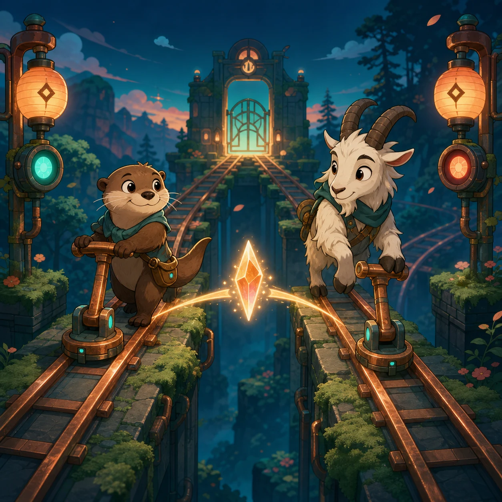

Twin Signal Jump

●◆
●◆Twin Switchyard is an original synchronized platform puzzle. Guide an otter and a mountain goat through split platform lanes, coordinate their shared moves, collect every shard, activate each switch, and reach their paired lantern exits.
Two route keepers share one signal line: the otter travels the low lane while the mountain goat takes the high lane. Every puzzle asks both travelers to move through the same moment without leaving one behind.
Left and Right move both travelers across their lanes, and Jump gives both the same hop. Platforms, floor heights, shards, fixed switches, and static hazards create different route decisions. Both lantern gates open together after every switch in the stage has been reached.
Collect each shard with its assigned traveler. A collision with a fixed hazard or a missed fall resets the current attempt. Once all shards and switches are complete, guide both travelers to their paired exits. Progress and best move counts stay in this browser.
Thirty authored stages form six five-stage arcs. Checkpoints at Stages 5, 10, 15, 20, 25, and 30 combine the documented shared movement and jumps, offset platforms and shards, fixed switches, static hazards, and paired exits. There are no alternating gates, moving hazards, or moving platforms.
Twin Switchyard keeps one logical play space across phone, landscape, and desktop. Touch, mouse, and keyboard controls resolve to the same shared movement state, while Main, Stage, Battle, and Result remain separate screens with direct returns.
This General browser game has no account, purchase, chat, leaderboard, or advertising flow. Stage clears, best move counts, language, sound, and preferences stay in the current browser profile and may reset when site data is cleared. No guide result is a medical, school, or professional assessment.